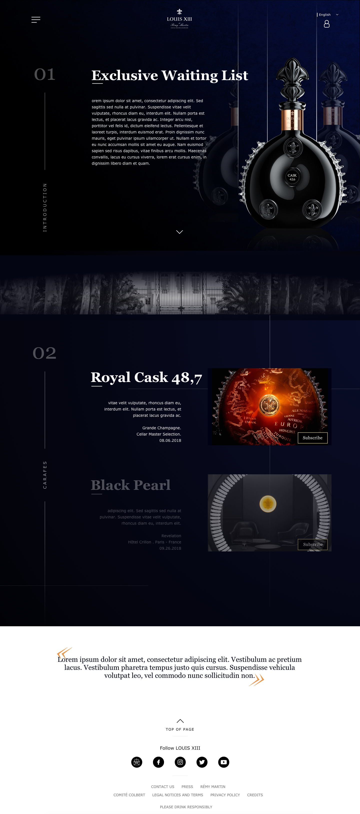
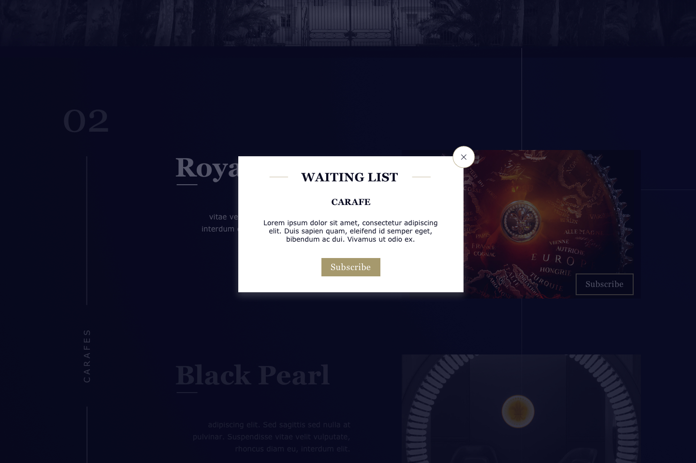
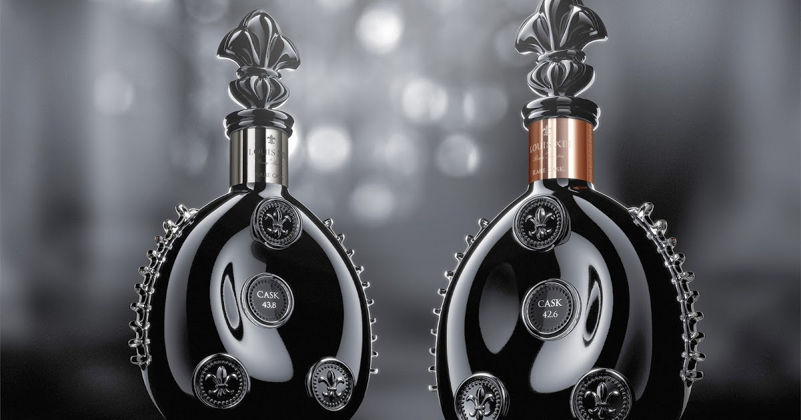
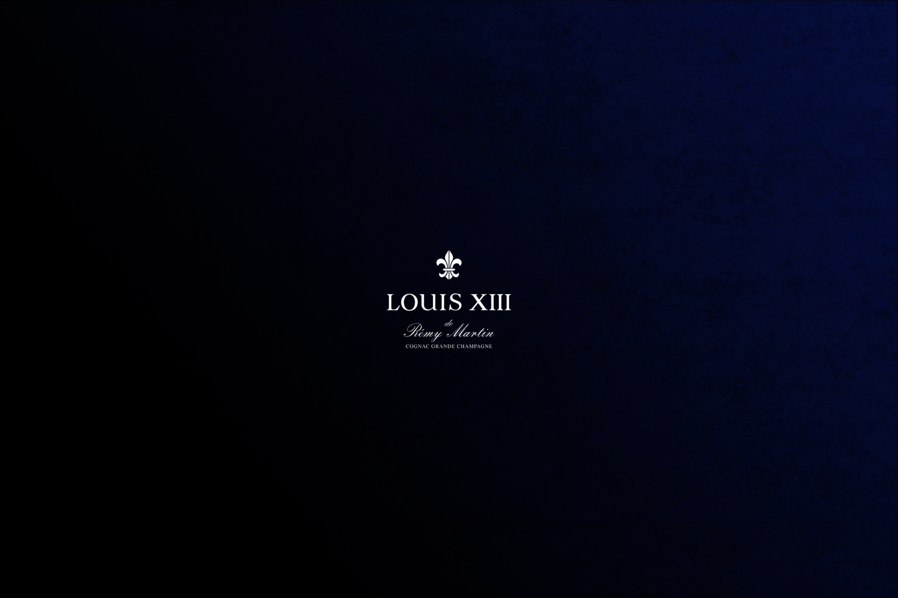

Louis XIII Cognac
A.D, UX/UI, Webdesign
BRIEF
Né en 1874, le cognac LOUIS XIII est un assemblage unique d'eaux-de-vie de vin issues exclusivement de Grande Champagne. Chaque carafe est numérotée et soufflées par les Maîtres cristalliers les plus réputés. Véritable incarnation d'un savoir-faire ancestral, chaque carafe est l'accomplissement d'une vie pour des générations de Maitres de Chai. Au fil des décennies, la communuion mystérieuse entre l'air, le bois et les eaux-de-vie se voit couronnée d'une explosion de saveurs et d'arômes.
Aujourd'hui le cognac Louis XIII est devenu une référence dans les spiritueux de luxe. Pour affirmer se statut Louis XIII désire créer une plateforme privée pour ses clients les plus prévilégiés en leur permettant de tisser un lien direct avec la marque. Ils pourront y découvrir des ventes, évènements et conseils privés et personnalisés.
CREATIVE ANSWER
En s'appuyant sur le positionnement ultra premium de la marque LOUIS XIII nous avons créer un site très épuré présentant une information claire et une naviguation intuitive mais aussi expérimentale tant au niveau UX que UI. L'idée étant de permettre au client de se plonger dans l'univers Louis XIII tout en ayant le loisir de pouvoir interrompre cette expérience pour trouver une rubrique spécifique à n'importe quel moment.
I hope you will enjoy the presentation.



